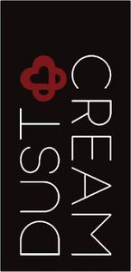

Trade Mark Journal No.2026/007 13 February 2026
WO0000001899724 (3,5,35)
Office of origin: European Union Intellectual Property Office (EUIPO)
Date of International Registration:23 September 2025
Date of designation in the UK:
23 September 2025

The mark contains the colours black, white and burgundy.
- Class 3
- Toiletries; sun protecting creams [cosmetics]; cosmetic rouges; cosmetics for the use on the hair; beauty milk; cleansing milk for toilet purposes; oils for cosmetic purposes; cosmetic kits; cosmetic kits; oils for toilet purposes; cosmetic pads; sun protecting creams [cosmetics]; cosmetic eye pencils; non-medicated cosmetics; night creams [cosmetics]; sun blocking oils [cosmetics]; cosmetic hair dressing preparations; body cream; sun-tanning gels; mineral oils [cosmetic]; cosmetic moisturisers; cosmetic moisturisers; skincare cosmetics; cosmetics in the form of milks; cosmetics for personal use; eyebrow cosmetics; moisturising concentrates [cosmetic]; toning creams [cosmetic]; after-sun oils [cosmetics]; self tanning creams [cosmetic]; cosmetics for animals; self-tanning preparations [cosmetics]; face creams for cosmetic use; cosmetics for eyelashes; sun blocking lipsticks [cosmetics]; cosmetic preparations for slimming purposes; cosmetic preparations for slimming purposes; cosmetic eye gels; moisturising gels [cosmetic]; pre-moistened cosmetic wipes; liners [cosmetics] for the eyes; facial moisturisers [cosmetic]; sun protecting creams [cosmetics]; antiperspirants [toiletries]; lip coatings [cosmetic]; cosmetics in the form of gels; cosmetics for use on the skin; facial cleansers [cosmetic]; cosmetics in the form of lotions; non-medicated beauty preparations; cosmetics in the form of powders; eyebrow cosmetics; after-sun oils [cosmetics]; cosmetics for the use on the hair; tissues impregnated with cosmetics; facial scrubs [cosmetic]; colour cosmetics for the eyes; cosmetics in the form of oils; nail base coat [cosmetics]; facial toners [cosmetic]; sun blocking preparations [cosmetics]; sun blocking preparations [cosmetics]; moisturising body lotion [cosmetic]; cosmetics in the form of creams; baths (cosmetic preparations for -); sun bronzers; cosmetics in the form of rouge; body oils [for cosmetic use]; nail varnish remover [cosmetics]; nail varnish remover [cosmetics]; nail hardeners [cosmetics]; cosmetics for eyelashes; skin cleansers [cosmetic]; skin cleansers [cosmetic]; skin cleansers [cosmetic]; skin balms (cosmetic); lip protectors [cosmetic]; skin whitening preparations [cosmetic]; skincare cosmetics; moisturising skin lotions [cosmetic]; powder compact refills [cosmetics]; sun-tanning gels; after-sun oils [cosmetics]; eyeliner; facial washes [cosmetic]; moisturising skin creams [cosmetic]; cosmetics for tanning the skin; beauty tonics for application to the body; cosmetics for the treatment of dry skin; topical skin sprays for cosmetic purposes; skin care oils [cosmetic]; slimming aids [cosmetic], other than for medical use; facial wipes impregnated with cosmetics; beauty tonics for application to the face; skin lightening compositions [cosmetic]; skin lightening compositions [cosmetic]; tanning preparations; skin care creams [cosmetic]; cosmetic preparations for use as aids to slimming; cosmetics in the form of eye shadow; cosmetics for use in the treatment of wrinkled skin; cosmetic kits; cosmetics for protecting the skin from sunburn; perfume; synthetic perfumery; perfumes for cardboard; extracts of flowers [perfumes]; extracts of flowers [perfumes]; aromatics for perfumes; natural oils for perfumes; solid perfumes; perfumery and fragrances; air fragrancing preparations; extracts of flowers [perfumes]; scented oils used to produce aromas when heated; oils for cleaning purposes; varnish-removing preparations; essential oils and aromatic extracts; cleaning and fragrancing preparations; soaps; perfumed soaps; almond soap; shaving soap; soaps in liquid form; waterless soap; perfumed soaps; hand soaps; deodorant soap; bar soap.
- Class 5
- Alcohol for pharmaceutical purposes; anti-bacterial soap; medicated soap; rubbing alcohol.
- Class 35
- Advertising; advertising particularly services for the promotion of goods; provision of space on web-sites for advertising goods and services; advertising of the goods of other vendors, enabling customers to conveniently view and compare the goods of those vendors; advertising, including promotion relating to the sale of goods and services for others through the transmission of advertising material and the dissemination of advertising messages on computer networks; advertising by mail order; advertising by mail order; publicity and sales promotion services; publicity and sales promotion services; arranging of demonstrations for advertising purposes; direct mail advertising; publicity and sales promotion services; advertising, marketing and promotional services; advertising in periodicals, brochures and newspapers; on-line advertising on a computer network; radio advertising; advertising; advertising, marketing and promotional services; business advertising services relating to franchising; advertising services provided via the Internet; advertising via electronic media and specifically the Internet.
CREAM TEAM SA
Representative: Timoleon Fountedakis, DODEKANISOU 22, THESSALONIKI, GREECE